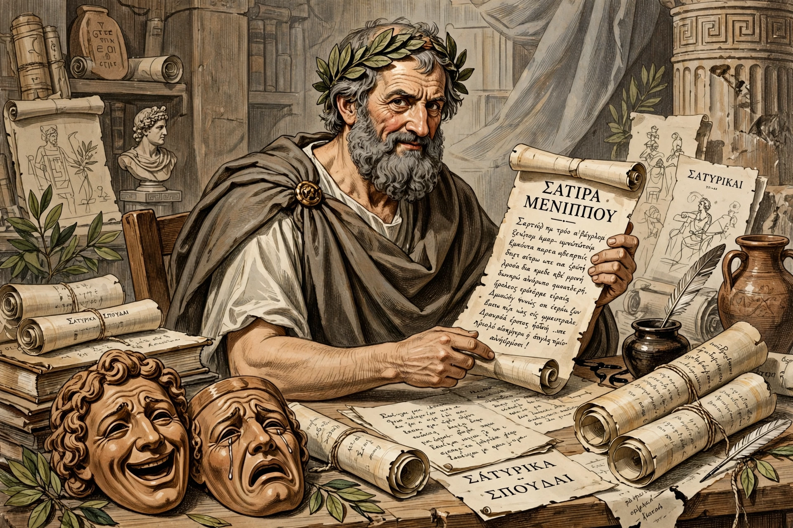

The Menippean satire is a form of satire, usually in prose, interspersed with verse, that attacks mental attitudes rather than individuals. It is named after Menippus of Gadara, a 3rd-century BCE Cynic philosopher.

Menippean satire mixes genres, languages, and registers, features fantastic voyages, dialogues of the dead, and encyclopaedic digressions. Mikhail Bakhtin and Northrop Frye treated it as a major form related to the anatomy and the novel.
Varro's Saturae Menippeae, Seneca's Apocolocyntosis, Petronius's Satyricon, Lucian's dialogues, Boethius's Consolation of Philosophy, Erasmus, Rabelais, Swift's Gulliver's Travels, Voltaire's Candide, and Thomas Pynchon are often cited.